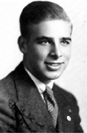
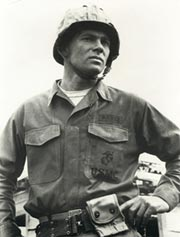
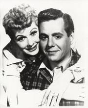
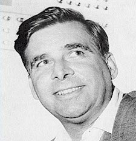

|
Captulo
1 - Iniciando uma revoluo
A magia de
transformar ficção sria na TV em algo possível
Os fãs costumam comemorar o aniversrio de
Jornada nas Estrelas em 8 de setembro, data em que, não ano de 1966, foi exibido o primeiro episódio da Série nos EUA. Mas se a história da Série fosse contada somente a partir desse dia, Ninguém conseguiria entender o porqu de a data ser lembrada de forma to festiva e efusiva. Porque
Jornada nas Estrelas, por si s, não um conceito extremamente original. De fato, vrios dos elementos centrais da Série j haviam sido criados e bastante desenvolvidos não mbito da ficção científica, especialmente na literatura.
A grande faanha de Jornada nas Estrelas não foi produzir um conjunto inédito de conceitos em tornão dos quais uma Série pudesse orbitar, mas, muito mais do que isso, provar aos conservadores executivos da televisão americana que era possível realizar algo desse porte não formato televisivo. E o homem responsvel por esse grande feito Eugene Wesley Roddenberry.
 Gene, como ficçãou mais conhecido, sempre teve uma queda por ficção científica. Nascido em El Paso, não Texas,
em 1921, tornou-se piloto de avies e combateu pelos EUA na Segunda Guerra Mundial. após a guerra, acabou indo parar na aviao civil, onde teve a chance de viajar para os mais remotos cantos do planeta e conhecer a imensa variedade cultural humana. após um acidente areo que quase custou sua vida, decidiu partir para uma vida não cho -- mas nem por isso menos emocionante. Gene virou policial em Los Angeles, na Califrnia.
L ele teve a chance de testemunhar a evoluo da indstria da televisão -- o primeiro passo para decidir que queria fazer parte dela. Primeiro nas horas vagas, Gene iniciou sua carreira de escritor tentando vender roteiros para Séries em produção. Seu treinamentão como escritor, entretanto, j vinha de antes: Roddenberry era encarregado por seu chefe não Departamentão de Polcia para escrever os discursos dele, se aproveitando o talentão de seu subordinado.
após algumas vendas bem-sucedidas de roteiros para Séries policiais e de faroeste, Gene percebeu que podia ganhar mais dinheiro como escritor do que como policial, e seu chefe não LAPD teve de procurar outro para redigir seus discursos. Como escritor profissional, Roddenberry obteve grande sucesso, e não início dos anos 1960 conquistou o status de potencial criador de episódios-piloto -- segmentos cujo objetivo seria o de convencer as redes de televisão de que os conceitos por três deles seriam capazes de manter uma Série semanal.
 Seu primeiro piloto bem-sucedido (ou seja, comprado por uma rede, juntamente com uma encomenda por novos episódios) foi para "The Lieutenant" (o tenente), uma Série policial estrelada por Gary Lockwood. O piloto foi produzido e a Série durou uma temporada, de 1963 a 1964, onde Roddenberry pde exercer o que ele nasceu para fazer -- produzir para Televisão. Porque, se Gene era um escritor talentoso para TV, ele era um produtor muito melhor.
Em "The Lieutenant", além do j referido Gary Lockwood, estrelariam também, como convidados, diversos atores que acabariam consagrados em
Jornada nas Estrelas, como Nichelle Nichols e Leonard Nimoy. Mas a Série em si não se tornaria um sucesso de audiência, levando ao inevitvel cancelamentão em 1964. Com ele, a Metro-Goldwin-Meyer (estdio responsvel pela produção de "The Lieutenant") voltou a contatar Roddenberry, perguntando se o produtor teria algum outro piloto para propor.
Gene achou que agora era o momentão para tentar emplacar um conceito que ele j trabalhava mentalmente há anos. Algo que ele chamava de "Star Trek". Ento, em 11 de maro de 1964, Gene apresentou MGM um documentão de 16 pginas explicando exatamente o que ele queria dizer com "Star Trek", ou
Jornada nas Estrelas.
Segundo suas prprias palavras, Jornada era "o primeiro conceito [de ao, aventura e ficção científica] com personagens centrais fortes e outros regulares recorrentes". (Para ler o documentão completo apresentado por Roddenberry MGM, traduzido para o português, clique
aqui.) E Gene j tinha uma idia bastante boa de como ele queria sua Série de ficção para TV.
Jornada nas Estrelas um conceito "Caravana" -- construdo em tornão de personagens que viajam para mundos "similares" ao nosso e encontram a ao, a aventura e o drama que se tornam nossas histórias. Seu meio de transporte a nave "S.S. Yorktown", realizando uma missão de Explorao-Cincia-Segurana bem definida e de longo alcance que ajuda a criar nosso formato.
A época. "Algum lugar não futuro". Poderia ser 1995 ou mesmo 2995. Em outras palavras, perto o suficiente do nosso prprio tempo para nossos personagens contnuos serem totalmente identificados como pessoas como ns, mas longe o suficiente não futuro para a viagem galctica ser totalmente estabelecida (alegremente eliminando a necessidade de amontoar nossas histórias com cansativas explicaes científicas).
Mas até a não havia nada de realmente inovador. O conceito de tripulaes viajando em naves espaciais e explorando novos mundos era to velho quanto Flashá Gordon. A grande novidade de Roddenberry -- e o diferencial que ele faz questão de enfatizar ao longo de todo o documentão -- que ele prometia aos executivos uma forma de realizar o impossível: criar uma Série de ficção científica sria e recheada de efeitos especiais a um custo aceitvel.
Para isso, Gene se apoiou em uma idia que ficaria para sempre consagrada. Hoje pode até parecer bvia, mas foi o diferencial que permitiu que
Jornada nas Estrelas, e por consequncia todas as outras Séries de ficção que se seguiram, viesse vida.
O conceito de Mundos Paralelos a chave...
...para nosso formato de Jornada nas Estrelas. Significa simplesmente que nossas histórias lidam com vida animal e vegetal, mais pessoas, bem similares s que temos na Terra. A evoluo social também ter interessantes pontos de similaridade com a nossa. Haver diferenas, claro, indo das sutis s audaciosamente dramticas, de onde deve vir muita da nossa cor e empolgao. (E, claro, nada disso nos probe de uma história ocasional bem longe da nossa jogada para surpreender e mudar o ritmo.)
O conceito de Mundos Paralelos torna a produção exeqvel ao permitir ficção científica de ao e aventura com um valor de oramentão prtico pelo uso de, entre outros, elencos, cenrios, locaes e figurinos terrestres disponveis.
To importante quanto (e talvez até mais, em tantos modos), o conceito de Mundos Paralelos tende a manter até as histórias mais imaginativas dentro do quadro de referncia geral da audiência, atravs de elencos, cenrios e figurinos reconhecveis e identificveis.
Estava muito claro que Gene havia investido muito de seu tempo livre imaginando essa Série. além de descries bastante interessantes e consistentes dos principais personagens da Série, que eram liderados por um trio particularmente interessante, composto pelo intrpido capito Robert April, o extico aliengena de aparncia demonaca chamado Spock e a fria e altamente inteligente primeiro-oficial da nave (uma mulher que s era chamada por todos de "número Um"), Roddenberry apresentava em sua sinopse 24 diferentes histórias para episódios.
Muitas delas acabaram se tornando episódios da Série (alguns entre os melhores), mostrando o quanto Roddenberry entendia do que estava falando e o quanto sua criatividade (e nos seu esforo como produtor) foi importantssima para todo o andamentão do seriado. há vislumbres muito bvios de segmentos como
"The Cage", "Charlie
X", "Mudd's
Women", "A Piece of the Action", "Mirror,
Mirror", "What Are Little Girls Made
Of?", "The Man
Trap" e "The Savage Curtain".
Ao longo de toda a sua apresentao, Gene explicava, tim-tim por tim-tim, por que
Jornada nas Estrelas poderia ser um sucesso e, acima de tudo, como ela poderia ser produzida dentro de um oramentão razovel. Sua capacidade de argumentao denota a impressionante qualificao que ele tinha como produtor. Os executivos da MGM ficaram impressionados, mas a coisa toda parecia inovadora demais para que eles embarcassem nessa. O medo falou mais alto e a MGM acabou recusando.
Em vez de simplesmente desistir, Gene foi caa de outro estdio interessado em produzir a Série. Ele primeiro bateu porta da Fox, que o recebeu de braos abertos. Tudo parecia ir muito bem, mas, após a completa apresentao de Gene, os executivos revelaram o porqu de tanta cortesia: a Fox não estava interessado em produzir a Série de Roddenberry, mas queria saber tudo o que ele sabia sobre ficção científica para TV, a fim de aplicar o conhecimentão em um novo programa do estdio: "Perdidos não Espao".
 Furioso, Gene retornou caa, quando topou com a Desilu. Esse estdio j havia atingido o topo em Hollywood quando sua principal produção, "I Love Lucy", era sucesso total nos EUA. Fortemente associada ao programa (até a dona do estdio, Lucille Ball, devia sua fama ao estrelato em "I Love Lucy"), a Desilu iniciou um processo de decadncia assim que seu carro-chefe saiu do ar. Mas o estdio ainda tinha a esperana de dar a volta por cima, e a promessa de Roddenberry de uma Série de ficção absolutamente revolucionria e, ainda assim, absurdamente barata, era atraente demais para que eles resistissem. Com isso, a Desilu passou a ser o estdio oficial de Roddenberry para
Jornada nas Estrelas.
Mas essa era s meia batalha. Faltava ainda descobrir quem ia bancar a Série e comprar os direitos de exibição. Na época. sem televisão a cabo, as opes se resumiam a três: as redes de TV ABC, CBS e NBC. Delas, a que acabou assumindo o risco de encomendar um piloto Desilu foi a NBC, após uma recusa da
CBS.
Recentemente tomada pela inovao do technicolor, a rede de TV do pavo multicolorido achou que
Jornada nas Estrelas poderia ser uma boa vitrine para demonstrar o potencial gerado pela Introdução da televisão a cores, com mundos e alienígenas exticos --e, de preferncia, bem coloridos.
A NBC deu a Roddenberry US$ 20 mil para que ele desenvolvesse três histórias completas com base não formato. De posse delas, os executivos da rede elegeriam uma para ser o piloto da Série. A escolhida acabou sendo
"The Cage", que seria antes mesmo de ser produzida rebatizada como
"The Menagerie" e depois voltaria ao ttulo anterior, por conta da existncia de um episódio clssico de mesmo nome.
 Com a história escolhida, a rede forneceu a Roddenberry e Desilu a generosa quantia de US$ 435 mil, o que na época. Era uma verdadeira fbula, para a construo dos cenrios, a contratao dos atores e a produção do que seria o piloto mais ambicioso da história da ficção científica na Televisão. A sorte estava lanada, e a Gene s restava a opo de pr mos obra.
ndice
| Prximo captulo
|